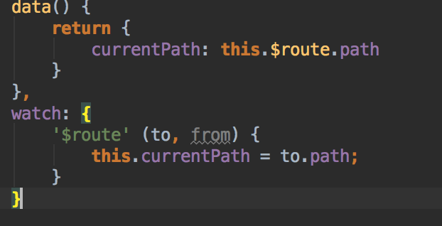

1、vue 同一个组件被一个页面调用两次，状态冲突
比如：问题对人有帮助，内容完整，我也想知道答案1 问题没有实际价值，缺少关键内容，没有改进余地
vue商城类项目，首页有每天秒杀和每周秒杀，都需要使用倒计时，倒计时已经封装成公共的组件，
但是一个页面同时调用这个倒计时组件导致状态冲突
后台返回的数据是每周秒杀和每天秒杀的开始时间，结束时间，和当前时间，
解决方案：
- 首先，复用性很高的东西，封装成公共组件的思路是对的
- 但是状态冲突的成因是因为公共的倒计时组件，将原本应该属于倒计时组件独立的东西（比如剩余时间），都暴露在了全局
- 建议不复制完全相同的组件，而是通过组件的props或者ref的应用，对倒计时内的状态进行修改，并且将这些状态封装在组件内部，而不是暴露到全局
- 理倒计时组件时，将后台返回数据绑定到组件上去，而不是通过组件主动去获取时间。这样，调用倒计时组件的页面上就可以定义每一个倒计时的剩余时间，而不至于因为倒计时读取同一个状态，而混在一起。
2、NavMenu 中使用路由导航，刷新后导航栏指向default-active设置的选项，但是router-view并不渲染路由指向的页面

解决方案：